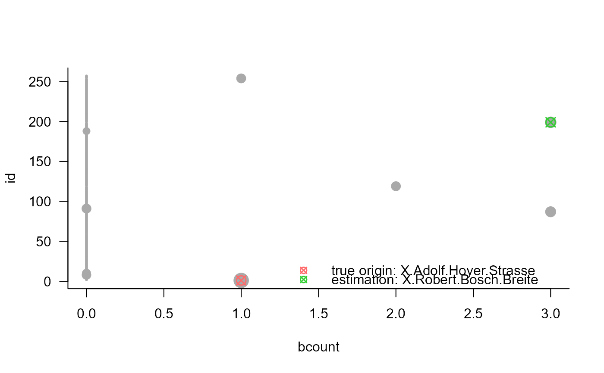

Origin Estimation for Propagation Processes on Complex Networks
Source:R/origin_helper.r, R/origin_methods.r
origin.RdThis is the main function for origin estimation for propagation processes on complex networks. Different methods are available: effective distance median ('edm'), recursive backtracking ('backtracking'), and centrality-based source estimation ('centrality').
For details on the methodological background, we refer to the corresponding publications.
origin_edm for effective distance-median origin estimation (Manitz et al., 2016)
origin(events, type = c("edm", "backtracking", "centrality", "bayesian"), ...) origin_edm(events, distance, silent = TRUE) origin_backtracking(events, graph, start_with_event_node = TRUE, silent = TRUE) origin_centrality(events, graph, silent = TRUE) origin_bayesian( events, thres.vec, obs.vec, mu.mat, lambda.list, poss.candidate.vec, prior, use.prior = TRUE )
Arguments
| events | numeric vector of event counts at a specific time point; if type is 'bayesian', 'events' is a matrix, number of nodes x time points; entries represent number of cases |
|---|---|
| type | character specifying the method, |
| ... | parameters to be passed to origin methods |
| distance | numeric matrix specifying the distance matrix (for |
| silent | locigal, should the messages be suppressed? |
| graph | igraph object specifying the underlying network graph (for |
| start_with_event_node | logical specifying whether backtracking only starts from nodes that experienced events (for |
| thres.vec | vector, length represents number of cities/nodes, representing thresholds for cities/nodes that they are infected |
| obs.vec | list of cities ids used as observers |
| mu.mat | matrix- number of cities/nodes x number of observers, each row represents - if this node is the source, the mean of arrival time vector |
| lambda.list | a length-number of cities/nodes list, each element is a number of observers x number of observers matrix - if a node is the source, the covariance matrix for arrival time vector |
| poss.candidate.vec | a boolean vector indicating if a node has the potential to be the source |
| prior | vector, length - number of cities/nodes, prior for cities |
| use.prior | boolean, TRUE or FALSE, if use prior, default TRUE |
Value
origin_edm returns an object of class origin, list with
estorigin estimateauxdata.framewith auxiliary variablesidas node identifier,eventsfor event magnitude,wmeanfor weighted mean,wvarfor weighted variance, andmdistmean distance from a node to all other nodes.
type = 'edm'effective distance median origin estimation
origin_backtracking returns an object of class origin, list with
estorigin estimateauxdata.framewith auxiliary variablesidas node identifier,eventsfor event magnitude, andbcountfor backtracking counts, how often backtracking identifies this source node.
type = 'backtracking'backtracking origin estimation
origin_centrality returns an object of class origin, list with
estorigin estimateauxdata.framewith auxiliary variablesidas node identifier,eventsfor event magnitude, andcentfor node centrality (betweenness divided degree).
type = 'centrality'centrality-based origin estimation
a dataframe with columns 'nodes' and 'probab', indicating nodes indices and their posteriors
References
Comin, C. H. and da Fontoura Costa, L. (2011). Identifying the starting point of a spreading process in complex networks. Physical Review E, 84. <doi: 10.1103/PhysRevE.84.056105>
Manitz, J., J. Harbering, M. Schmidt, T. Kneib, and A. Schoebel (2017): Source Estimation for Propagation Processes on Complex Networks with an Application to Delays in Public Transportation Systems. Journal of Royal Statistical Society C (Applied Statistics), 66: 521-536. <doi: 10.1111/rssc.12176>
Manitz, J. (2014). Statistical Inference for Propagation Processes on Complex Networks. Ph.D. thesis, Georg-August-University Goettingen. Verlag Dr.~Hut, ISBN 978-3-8439-1668-4. Available online: https://ediss.uni-goettingen.de/handle/11858/00-1735-0000-0022-5F38-B.
Manitz, J., Kneib, T., Schlather, M., Helbing, D. and Brockmann, D. (2014). Origin detection during food-borne disease outbreaks - a case study of the 2011 EHEC/HUS outbreak in Germany. PLoS Currents Outbreaks, 1. <doi: 10.1371/currents.outbreaks.f3fdeb08c5b9de7c09ed9cbcef5f01f2>
Li, J., Manitz, J., Bertuzzo, E. and Kolaczyk, E.D. (2020). Sensor-based localization of epidemic sources on human mobility networks. arXiv preprint Available online: https://arxiv.org/abs/2011.00138.
See also
Other origin-est:
origin_multiple()
Author
Juliane Manitz with contributions by Jonas Harbering
Jun Li
Examples
data(delayGoe) # compute effective distance data(ptnGoe) goenet <- igraph::as_adjacency_matrix(ptnGoe, sparse=FALSE) p <- goenet/rowSums(goenet) eff <- eff_dist(p)#> Computing the effective distance between 257 nodes: #> 1................................................................................................... #> 100................................................................................................... #> 200.........................................................done# apply effective distance median source estimation om <- origin(events=delayGoe[10,-c(1:2)], type='edm', distance=eff) summary(om)#> Effective distance median origin estimation: #> #> estimated node of origin 91: X.Gotthelf.Leimbach.Strasse #> #> auxiliary variables: #> id events wmean wvar #> Min. : 1 Min. : 0.0000 Min. : 5.482 Min. :0.3987 #> 1st Qu.: 65 1st Qu.: 0.0000 1st Qu.:21.572 1st Qu.:2.2761 #> Median :129 Median : 0.0000 Median :27.345 Median :2.4050 #> Mean :129 Mean : 0.6459 Mean :26.948 Mean :2.4989 #> 3rd Qu.:193 3rd Qu.: 0.0000 3rd Qu.:33.359 3rd Qu.:2.9986 #> Max. :257 Max. :46.0000 Max. :47.762 Max. :6.2052 #> mdist #> Min. :14.34 #> 1st Qu.:20.75 #> Median :24.23 #> Mean :24.92 #> 3rd Qu.:28.88 #> Max. :39.16#> start est hitt rank spj dist #> 1 X.Adolf.Hoyer.Strasse X.Gotthelf.Leimbach.Strasse FALSE 2 2 1332# backtracking origin estimation (Manitz et al., 2016) ob <- origin(events=delayGoe[10,-c(1:2)], type='backtracking', graph=ptnGoe) summary(ob)#> Backtracking origin estimation: #> #> estimated node of origin 87: X.Gesundbrunnen #> #> auxiliary variables: #> id events bcount #> Min. : 1 Min. : 0.0000 Min. :0.00000 #> 1st Qu.: 65 1st Qu.: 0.0000 1st Qu.:0.00000 #> Median :129 Median : 0.0000 Median :0.00000 #> Mean :129 Mean : 0.6459 Mean :0.03891 #> 3rd Qu.:193 3rd Qu.: 0.0000 3rd Qu.:0.00000 #> Max. :257 Max. :46.0000 Max. :3.00000#> start est hitt rank spj dist #> 1 X.Adolf.Hoyer.Strasse X.Gesundbrunnen FALSE 4 8 5328# centrality-based origin estimation (Comin et al., 2011) oc <- origin(events=delayGoe[10,-c(1:2)], type='centrality', graph=ptnGoe) summary(oc)#> Centrality-based origin estimation: #> #> estimated node of origin 119: X.Hermann.Kolbe.Strasse #> #> auxiliary variables: #> id events cent #> Min. : 1 Min. : 0.0000 Min. :0.000 #> 1st Qu.: 65 1st Qu.: 0.0000 1st Qu.:2.938 #> Median :129 Median : 0.0000 Median :5.875 #> Mean :129 Mean : 0.6459 Mean :5.167 #> 3rd Qu.:193 3rd Qu.: 0.0000 3rd Qu.:8.062 #> Max. :257 Max. :46.0000 Max. :9.000 #> NA's :247#> start est hitt rank spj dist #> 1 X.Adolf.Hoyer.Strasse X.Hermann.Kolbe.Strasse FALSE 9 5 3330# fake training data, indicating format nnodes <- 851 max.day <- 1312 nsimu <- 20 max.case.per.day <- 10 train.data.fake <- list() for (j in 1:nnodes) { train.data.fake[[j]] <- matrix(sample.int(max.day, size = nsimu*nnodes, replace = TRUE), nrow = nsimu, ncol = nnodes) } obs.vec <- (1:9) candidate.thres <- 0.3 mu.lambda.list <- compute_mu_lambda(train.data.fake, obs.vec, candidate.thres)#> This is loop: 100 #> This is loop: 200 #> This is loop: 300 #> This is loop: 400 #> This is loop: 500 #> This is loop: 600 #> This is loop: 700 #> This is loop: 800# matrix representing number of cases per node per day cases.node.day <- matrix(sample.int(max.case.per.day, size = nnodes*max.day, replace = TRUE), nrow = nnodes, ncol = max.day) nnodes <- dim(cases.node.day)[1] # number of nodes # fixed threshold for all nodes - 10 infected people thres.vec <- rep(10, nnodes) # flat/non-informative prior prior <- rep(1, nnodes) result2.df <- origin(events = cases.node.day, type = "bayesian", thres.vec = thres.vec, obs.vec = obs.vec, mu.mat=mu.lambda.list$mu.mat, lambda.list = mu.lambda.list$lambda.list, poss.candidate.vec=mu.lambda.list$poss.candidate.vec, prior=prior, use.prior=TRUE)